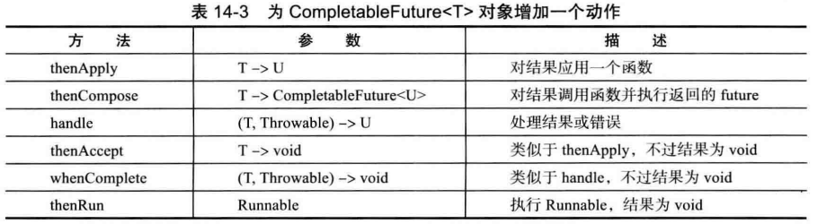
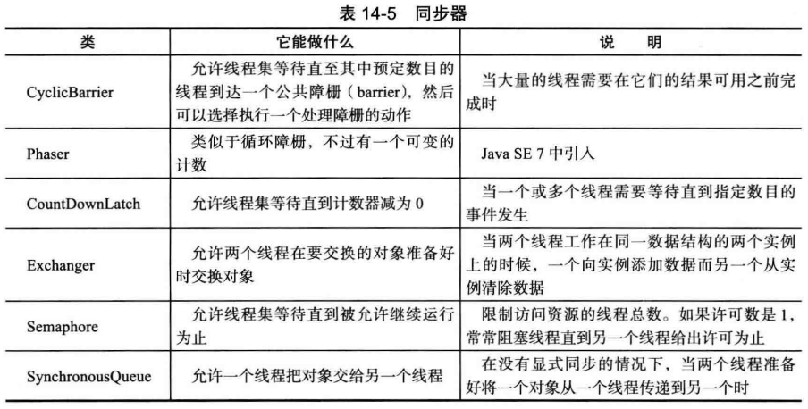

多进程程序中的每一个进程都拥有自己的一整套变量，而线程则共享数据，共享变量使线程之间的通信比进程之间的通信更有效、 更容易，且在有的操作系统中线程更加轻量级。在实际应用中有很多地方都用到了多线程，例如一个浏览器可以同时下载几幅图片等等。
一、创建线程 1 2 3 4 5 6 7 8 9 10 11 12 13 14 15 16 17 18 19 20 21 22 23 24 25 Runnable r = () -> { try { for (int i = 1 ; i <= STEPS; i ++) { ball.move(comp.getBounds()); comp.repaint(); Thread.sleep(DELAY); } } catch (InterruptedException e) { } }; Thread t = new Thread(r); t.start(); public interface Runnable void run () }
二、中断线程
当线程的 run 方法执行方法体中最后一条语句后， 并经由执行 return 语句返回时，或者出现了在方法中没有捕获的异常时，线程将终止。
没有可以强制线程终止的方法，但是有方法可以用来请求终止线程。
1 2 3 4 5 6 7 8 9 10 11 12 13 14 15 16 17 18 19 20 21 22 23 24 25 26 27 28 29 30 31 32 33 34 35 36 37 38 39 40 41 42 43 44 45 Runnable r = () -> { try { while (!Thread.currentThread().islnterrupted() && more work to do ) { do more work } } catch (InterruptedException e) { } finally { cleanup,if required } }; void mySubTask () ... try { sleep(delay); } catch (InterruptedException e) { Thread.currentThread().interrupt(); } ... } void mySubTask () throws InterruptedException ... sleep(delay); ... } void interrupt () static boolean interrupted () boolean isInterrupted () static Thread currentThread ()
三、线程状态（6种）
New (新创建）
Runnable (可运行）
Blocked (被阻塞）
Waiting (等待）
Timed waiting (计时等待）
Terminated (被终止）
线程状态间的转换：
1. 新创建线程 在newThread(r)之后还未运行之前，还有一些基础工作要做，这个状态称为new状态，即新创建状态。
2. 可运行线程
一旦调用 start 方法，线程就处于 runnable 状态。
然而为了让其它线程获得运行机会，运行中的线程可能被中断，线程调度的细节依赖于操作系统提供的服务(抢占式调度或协作式调度)。
现在所有的桌面以及服务器操作系统都使用抢占式调度（时间片和优先级调度），像手机这样的小型设备可能使用协作式调度（线程只有在调用 yield 方法、 或者被阻塞或等待时，线程才失去控制权。）
故在任何给定时刻，一个可运行的线程可能正在运行也可能没有运行。
3. 被阻塞线程和等待线程
当线程处于被阻塞或等待状态时，它暂时不活动。它不运行任何代码且消耗最少的资源。直到线程调度器重新激活它。
线程转换为被阻塞状态或等待状态的时机：
当一个线程试图获取一个内部的对象锁而该锁被其他线程持有，则该线程进入阻塞状。当所有其他线程释放该锁，并且线程调度器允许本线程持有它的时候，该线程将变成非阻塞状态。
当线程等待另一个线程通知调度器一个条件时，它自己进入等待状态。在调用 Object.wait 方法或 Thread.join 方法， 或者是等待 java.util.concurrent 库中的 Lock 或 Condition 时， 就会出现这种情况。注意等待和阻塞状态是不同的。
有几个方法有一个超时参数。调用它们导致线程进入计时等待 （ timed waiting ) 状态。这一状态将一直保持到超时期满或者接收到适当的通知。带有超时参数的方法有 Thread.sleep 和 Object.wait、Threadjoin、 Lock.tryLock 以及 Condition.await 的计时版。
4. 被终止的线程 线程被终止的两个原因：
因为 run 方法正常退出而自然死亡。
因为一个没有捕获的异常终止了 run 方法而意外死亡。
四、线程属性 1. 线程优先级
在 Java 程序设计语言中，每一个线程有一个优先级。
默认情况下，一个线程继承它的父线程的优先级。可以用 setPriority 方法提高或降低任何一个线程的优先级。
可以将优先级设置为在 MIN_PRIORITY (在 Thread 类中定义为 1 ) 与 MAX_PRIORITY (定义为 10 ) 之间的任何值。一般使用 NORM_PRIORITY （默认优先级，被定义为 5）。
线程优先级是高度依赖于系统的。当虚拟机依赖于宿主机平台的线程实现机制时， Java 线程的优先级被映射到宿主机平台的优先级上。
2. 守护线程（daemon）
守护线程的唯一用途是为其他线程提供服务。
当只剩下守护线程时，虚拟机就退出了，由于如果只剩下守护线程，就没必要继续运行程序了。
守护线程应该永远不去访问固有资源， 如文件、 数据库，因为它会在任何时候甚至在一个操作的中间发生中断。
1 void setDaemon ( boolean isDaemon )
3. 未捕获异常处理器
线程的 run方法不能抛出任何受查异常，不需要任何 catch子句来处理可以被传播的异常。相反，就在线程死亡之前，异常被传递到一个用于未捕获异常的处理器。
该处理器必须属于一个实现 Thread.UncaughtExceptionHandler 接口的类。
1 2 3 4 5 6 7 8 9 10 static void setDefaultUncaughtExceptionHandler (Thread.UncaughtExceptionHandler handler) static Thread.UncaughtExceptionHandler getDefaultUncaughtExceptionHandler () void setUncaughtExceptionHandler (Thread.UncaughtExceptionHandlerhandler) Thread.UncaughtExceptionHandler getUncaughtExceptionHandler () void UncaughtException (Thread t, Throwable e)
五、同步 1. 竞争条件 往往线程中的某个修改操作不是原子操作，则当线程1在计算的过程中被剥夺运行权，并在线程2修改完成同一项内容后被唤醒时，线程1对该项做的修改就会擦除线程2对该项做出的修改，此时程序就会出现错误。如果能够确保线程在失去控制之前方法运行完成，那么程序就不会因为竞争条件而产生错误。accounts[to] += amount;就不是一个原子操作：
将 accounts[to] 加载到寄存器。
增加 amount。
将结果写回 accounts[to]。
2. 锁对象（ReentrantLock）
ReentrantLock 保护代码块的结构确保任何时刻只有一个线程进入临界区 。一旦一个线程封锁了锁对象，其他任何线程都无法通过 lock 语句。当其他线程调用 lock 时，它们被阻塞，直到第一个线程释放锁对象。
必须在finally子句中包括解锁 unlock 操作，如果在临界区的代码抛出异常，锁必须被释放。否则，其他线程将永远阻塞。
如果使用锁，就不能使用带资源的 try 语句。
加了锁的类的每一个对象都有自己的 ReentrantLock 锁对象。
锁是可重入的 ， 因为线程可以重复地获得已经持有的锁 。锁保持一个持有计数 来跟踪对 lock 方法的嵌套调用，当该计数为0时，线程才释放锁。
1 2 3 4 5 6 7 8 9 10 11 12 13 14 15 16 17 18 19 20 21 22 23 24 25 26 27 28 29 30 31 32 33 34 35 36 37 38 39 myLock.lock(); try { 临界区 } finally { myLock.unlock(); } public class Bank private Lock bankLock = new ReentrantLock(); ... public void transfer (int from, int to, int amount) { bankLock.lock(); try { System.out.print(Thread.currentThread()); accounts[from] -= amount; System.out.printf(" %10.2f from %d to %d" , amount, from, to); accounts[to] += amount; System.out.printf(" Total Balance: %10.2f%n" , getTotalBalance()); } finally { banklock.unlock(); } } } ReentrantLock(boolean fair)
3. 条件对象
线程进入临界区后发现需要满足某一条件之后才能执行，但由于判断条件和执行语句之间可能被其它线程打断，故为了避免错误需要使用一个条件对象来管理这些线程。
使用条件对象的await方法使当前需要某条件的线程阻塞并放弃锁。
等待获得锁的线程和调用 await 方法的线程存在本质上的不同。一旦一个线程调用 await 方法，它进入该条件的等待集 。当锁可用时 ，该线程不能马上解除阻塞。相反，它处于阻塞状态，直到另一个线程调用同一条件上的 signalAll 方法时为止。
当调用条件对象的signalALL方法时会重新激活因为这一条件而等待的所有线程 。当这些线程从等待集当中移出时，它们再次成为可运行的，调度器将再次激活它们。同时，它们将试图重新进入该对象。一旦锁成为可用的，它们中的某个将从 await 调用返回， 获得该锁并从被阻塞的地方继续执行。
如果所有其他线程被阻塞， 最后一个活动线程在解除其他线程的阻塞状态之前就调用 await 方法，那么它也被阻塞，这会导致死锁 现象，并使该程序被挂起。
经验上讲，在对象的状态有利于等待线程的方向改变时调用 signalAll。
条件对象的另一个方法 signal, 是随机解除 等待集中某个 线程的阻塞状态。这更加有效，但存在危险。如果随机选择的线程发现自己仍然不能运行，那么它再次被阻塞。如果没有其他线程再次调用 signal, 那么系统就死锁了。
当一个线程拥有某个条件的锁时，它仅仅可以在该条件上调用 await、signalAll 或signal 方法。
锁可以拥有一个或多个相关的条件对象。
1 2 3 4 5 6 7 8 9 10 11 12 13 14 15 16 17 18 19 20 21 22 23 24 25 public class Bank private final double [] accounts = new double [n]; private Lock bankLock = new ReentrantLock(); private Condition sufficientFunds = = bankLock.newCondition(); public void transfer (int from, int to, double amount) throws InterruptedException { bankLock.lock(); try { while (accounts [from] < amount) sufficientFunds.await(); System.out.print(Thread.currentThread()); accounts[from] -= amount; System.out.printf(" %10.2f from %d to %d" , amount, from, to); accounts[to] += amount; System.out.printf(" Total Balance: %10.2f%n" , getTotalBalance()); sufficientFunds.signalAll(); } finally { bankLock.unlock(); } }
4. synchronized 关键字(内部对象锁)
从 1.0 版开始，Java中的每一个对象都有一个内部锁和一个内部条件。如果一个方法用 synchronized 关键字声明，那么对象的锁将保护整个方法。也就是说，要调用该方法，线程必须获得内部的对象锁。
内部对象锁只有一个相关条件 。wait 方法添加一个线程到等待集中，notifyAll/notify 方法解除等待线程的阻塞状态。
将静态方法声明为 synchronized 也是合法的。如果调用这种方法，该方法获得相关的类对象的内部锁，且没有其他线程可以调用同一个类的这个或任何其他的同步静态方法 。
实际应用中应尽量使用synchronized 关键字，只有在特别需要 Lock/Condition 结构提供的独有特性时，才使用 Lock/Condition。
1 2 3 4 5 6 7 8 9 10 11 12 13 14 15 16 17 18 19 20 21 22 23 24 25 26 27 28 29 30 31 32 33 34 public synchronized void method () method body } public void method () this .intrinsicLock.lock(); try { method body } finally { this .intrinsicLock.unlock(); } } class Bank private double [] accounts; public synchronized void transfer (int from，int to, int amount) throws InterruptedException { while (accounts[from] < amount) wait(); accounts[from] -= amount ; accounts[to] += amount ; notifyAll(); } public synchronized double getTotalBalance () }
5. 同步阻塞 通过进入一个同步阻塞也可以获得每个java对象持有的锁。
1 2 3 4 5 6 7 8 9 10 11 12 13 14 15 16 synchronized (obj) { critical section } public void transfer (Vector<Double> accounts, int from, int to, int amount) synchronized (accounts) { accounts.set(from, accounts.get(from) - amount); accounts.set(to, accounts.get(to) + amount); } Systen.out.print1n(. . .); }
6. 监视器概念
监视器可以在不需要程序员考虑如何加锁的情况下，就可以保证多线程的安全性，可用synchronized 关键字来实现。
监视器应满足如下特性：
监视器是只包含私有域的类。
每个监视器类的对象有一个相关的锁。
使用该锁对所有的方法进行加锁。换句话说，如果客户端调用 对象的某个方法, 那么对象的锁是在方法调用开始时自动获得， 并且当方法返回时自动释放该锁。因为所有的域是私有的，这样的安排可以确保一个线程在对对象操作时， 没有其他线程能访问该域。
该锁可以有任意多个相关条件。
7. Volatile 域
volatile 关键字为实例域的同步访问提供了一种免锁机制。
如果声明一个域为 volatile ,那么编译器 和虚拟机 就知道该域是可能被另一个线程并发更新的。
Volatile 变量不能提供原子性，不能保证读取、 翻转和写入不被中断，故该变量只用于原子操作时可声明为Volatile。
一旦一个共享变量（类的成员变量、类的静态成员变量）被volatile修饰之后：
保证了不同线程对这个变量进行操作时的可见性，即一个线程修改了某个变量的值，这新值对其他线程来说是立即可见的。
禁止进行指令重排序。
8. final 变量 还有一种情况可以安全地访问一个共享域， 即这个域声明为 final 时。
1 final Map<String, Double> accounts = new HashKap<>();
9. 原子性 1 2 3 4 5 6 7 8 9 10 11 12 13 14 15 public static AtomicLong nextNumber = new AtomicLong(); long id = nextNumber.incrementAndGet(); do { oldValue = largest.get(); newValue = Math.max (oldValue , observed); }while (llargest.compareAndSet(oldValue, newValue)); largest.updateAndGet(x -> Math .max(x, observed)); largest.accumulateAndCet(observed, Math::max); LongAccumulator adder = new LongAccumulator(Long::sum, 0 ); adder.accumulate(value);
10. 死锁
锁和条件不能解决多线程中的所有问题，在程序运行的过程中有可能所有的线程都会被阻塞，这样的状态就称为死锁，当程序进入死锁状态时程序就会被挂起。
当程序挂起时，键入 CTRL+\, 将得到一个所有线程的列表。每一个线程有一个栈踪迹，告诉你线程被阻塞的位置。
Java 编程语言中没有任何东西可以避免或打破这种死锁现象。只能仔细设计程序，以确保不会出现死锁。
11. 线程局部变量 由于在线程间共享变量有死锁的风险，且使用同步机制会产生很大的开销，故对于那些不需要共享的变量就可以使用线程局部变量为各个线程提供各自的实例。
1 2 3 4 5 6 public static final ThreadLocal<SimpleDateFormat> dateFormat =ThreadLocal.withInitial(() -> new SimpleDateFormat("yyyy-MM-dd" ));String dateStamp = dateFormat.get().format(new Date()); int random = ThreadLocalRandom.current().nextlnt(upperBound);
12. 锁测试与超时 1 2 3 4 5 6 7 8 9 10 11 12 13 14 15 16 17 if (myLock.tryLock()) { try { . . . } finally { myLock.unlock(); } } else } if (myLock.tryLock(100 , TimeUnit.MILLISECONDS))myCondition.await(100 , TimeUnit.MILLISECONDS))
13. 读 / 写锁 如果很多线程从一个数据结构读取数据而很少线程修改其中数据的话，使用ReentrantReadWriteLock 类是十分有用的。
1 2 3 4 5 6 7 8 9 10 11 12 13 14 15 16 17 18 19 20 private ReentrantReadWriteLock rwl = new ReentrantReadWriteLock();private Lock readLock = rwl . readLock();private Lock writeLock = rwl .writeLock();public double getTotalBalance () readLock.lock(); try { . . . } finally { readLock.unlock(); } } public void transfer (. . .) writeLock.lock(); try { . . . } finally { writeLock.unlock(); } }
六、阻塞队列 阻塞队列是一个支持两个附加操作的队列。这两个附加的操作是：在队列为空时，获取元素的线程会等待队列变为非空。当队列满时，存储元素的线程会等待队列可用。阻塞队列常用于生产者和消费者的场景，生产者是往队列里添加元素的线程，消费者是从队列里拿元素的线程。阻塞队列就是生产者存放元素的容器，而消费者也只从容器里拿元素。
七、线程安全的集合 1. 高效的映射、集和队列
java.util.concurrent 包提供了映射、 有序集和队列的高效实现：ConcurrentHashMap、ConcurrentSkipListMap、ConcurrentSkipListSet 和 ConcurrentLinkedQueue。这些集合使用复杂的算法，通过允许并发地访问数据结构的不同部分来使竞争极小化。
size 方法不必在常量时间内操作,通常需要遍历来确定集合当前的大小。
2. 映射条目的原子更新 1 2 3 4 5 6 7 8 9 10 11 12 13 14 15 16 17 do { oldValue = map.get(word); newValue = oldValue = null ? 1 : oldValue + 1 ; } while (!map.replace(word, oldValue, newValue)); } map.putIfAbsent(word, new LongAdder()).increment(); map.compute(word , (k, v) -> v = null ? 1 : v + 1 ); map.computelfAbsent(word , k -> new LongAdder()).increment(); map.merge(word, 1L , (existingValue, newValue) -> existingValue + newValue); map.merge(word, 1L , Long::sum);
3. 对并发散列映射的批操作 1 2 3 4 5 6 7 8 9 10 String result = map.search(threshold, (k, v) -> v > 1000 ? k : null ); map.forEach(threshold, (k, v) -> System.out.println(k + " -> " + v)); map.forEach(threshold, (k, v) -> k + " -> " + v, System.out::println); map.forEach(threshold, (k, v) -> v > 1000 ? k + " -> " + v : null , System.out::println); Long sum = map.reduceValues(threshold, Long::sum); Integer maxlength = map.reduceKeys(threshold, String::length, Integer::max); Long count = map. reduceValues(threshold, v -> v > 1000 ? 1L : null , Long::sum);
4. 并发集视图 可以由ConcurrentHashMap的某些操作得到一个线程安全的集合。
1 2 3 4 5 6 Set<String> words = ConcurrentHashMap.<String>newKeySet(); Set<String> words = map.keySet(1L ); words.add("Java" );
5. 写数组的拷贝
CopyOnWriteArrayList 和 CopyOnWriteArraySet 是线程安全的集合，其中所有的修改线程对底层数组进行复制。
如果数组后来被修改了，迭代器仍然引用旧数组，但是，集合的数组已经被替换了。因而，旧的迭代器拥有一致的（可能过时的）视图，访问它无须任何同步开销。
6. 并行数组算法 Java SE 8中，Arrays 类提供了大量并行化操作。
1 2 3 4 5 6 7 8 9 10 11 12 13 14 String contents = new String(Files.readAllBytes(Paths.get("alice.txt" )), StandardCharsets.UTF_8); String[] words = contents.split("[\\P{L}]+" ); Arrays.parallelSort(words): Arrays.parallelSort(words, Comparator.comparing(String::length)); values.parallelSort(values, length / 2 , values,length); Arrays.parallelSetAll(values, i-> i % 10 ); Arrays.parallelPrefix(values, (x, y) -> x * y);
7. 较早的线程安全集合
Java的初始版本中，Vector 和 Hashtable 类就提供了线程安全的动态数组和散列表的实现。
ArrayList 和 HashMap 类不是线程安全的。
任何集合类都可以通过使用同步包装器 变成线程安全的。
1 2 3 4 5 6 7 8 9 10 11 12 List<E> synchArrayList = Collections.synchronizedList(new ArrayList<E>()); Map<K , V> synchHashMap = Collections.synchronizedMap(new HashMap<K , V>()); synchronized (synchHashMap) { Iterator<K> iter = synchHashMap.keySet().iterator(); while (iter.hasNext()); }
八、Callable 与 Future 1 2 3 4 5 6 7 8 9 10 11 12 13 14 15 16 17 18 19 20 21 public interface Callable <V > V call () throws Exception ; } public interface Future <V > V get () throws . . . ; V get (long timeout, TimeUnit unit) throws . . . void cancel (boolean mayInterrupt) ; boolean isCancelled () boolean isDone () } Callable<Integer> myComputation = . . .; FutureTask<Integer> task = new FutureTask<Integer>(myComputation); Thread t = new Thread(task); t.start(); Integer result = task.get();
九、执行器 执行器（ Executor) 类有许多静态工厂方法用来构建线程池：
1. 线程池 使用线程池的步骤：
调用 Executors 类中静态的方法 newCachedThreadPool 或 newFixedThreadPool。
调用 submit 提交 Runnable 或 Callable 对象。
如果想要取消一个任务，或如果提交 Callable 对象，那就要保存好返回的 Future对象。
当不再提交任何任务时，调用 shutdown。
1 2 3 4 5 6 7 8 9 10 ExecutorService newCachedThreadPool () ExecutorService newFixedThreadPool (int threads) ExecutorService newSingleThreadExecutor () Future<T > submit (Cal1able<T> task) Future< T > submit (Runnable task, T result) Future<?> submit (Runnable task) void shutdown () int getLargestPoolSize ()
2. 预定执行 ScheduledExecutorService 接口具有为预定执行或重复执行任务而设计的方法。
3. 控制任务组 使用执行器可以控制一组相关任务：
1 2 3 4 5 6 7 8 9 10 List<Callab1e<T>> tasks = . . .; List<Future<T>> results = executor.invokeAll(tasks); for (Future<T> result : results) processFurther(result.get()); ExecutorCompletionService<T> service = new ExecutorCompletionServiceo(executor); for (Callable<T> task : tasks) service,submit(task);for (int i = 0 ; i < tasks.size(); i ++) processFurther(service.take().get());
4. Fork-Join 框架
Fork-join 框架专门用来完成计算密集型任务，如图像或视频处理，它通过将任务分解为多个子任务来执行，最后合并其结果。
Fork-join 框架使用了一种有效的智能方法称为工作密取 来平衡可用线程的工作负载，每个工作线程都有一个双端队列来完成任务。
5. 可完成Future 可完成future是可以组合的，利用可完成 fiiture，可以指定你希望做什么，以及希望以什么顺序执行这些工作。
1 2 ConipletableFuture<String> contents = readPage(url); CompletableFuture<List<URL>> links = contents.thenApply(Parser::getlinks);

十、同步器 
1. 信号量 信号量作为同步原语 可以被有效地实现， 并且有足够的能力解决许多常见的线程同步问题。
2. 倒计时门栓(CountDownLatch) 一个倒计时门栓让一个线程集等待直到计数变为 0。倒计时门栓是一次性的。一旦计数为 0, 就不能再重用了。
3. 障栅(CyclicBarrier 类)
CyclicBarrier 类实现了一个集结点称为障栅，当一个线程完成了它的那部分任务后就让它运行到障栅处。一旦所有的线程都到达了这个障栅，障栅就撤销，线程就可以继续运行。
如果任何一个在障栅上等待的线程离开了障栅，那么障栅就被破坏了，所有其他线程的 await 方法抛出 BrokenBarrierException 异常。
障栅被称为是循环的（ cyclic), 因为可以在所有等待线程被释放后被重用。
Phaser 类增加了更大的灵活性，允许改变不同阶段中参与线程的个数。
1 2 3 4 5 6 7 8 9 10 11 12 13 14 15 16 17 18 CyclicBarrier barrier = new CydicBarrier(nthreads); public void run () doWork(); bamer.await(); ... } barrier.await(100 , TimeUnit.MILLISECONDS); Runnable barrierAction = . . .; CyclicBarrier barrier = new Cyc1icBarrier(nthreads, barrierAction);
4. 交换器（Exchanger） 当两个线程在同一个数据缓冲区的两个实例上工作完成后，就可以使用交换器来相互交换缓冲区。
5. 同步队列（SynchronousQueue）
同步队列是一种将生产者与消费者线程配对的机制。当一个线程调用 SynchronousQueue的 put 方法时，它会阻塞直到另一个线程调用 take 方法为止，数据仅仅沿一个方向传递。
即使 SynchronousQueue 类实现了 BlockingQueue 接口， 概念上讲，它依然不是一个队列。它没有包含任何元素，它的 size方法总是返回 0。